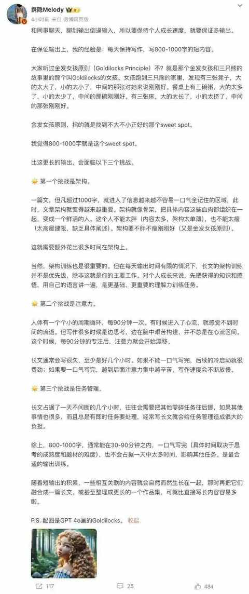
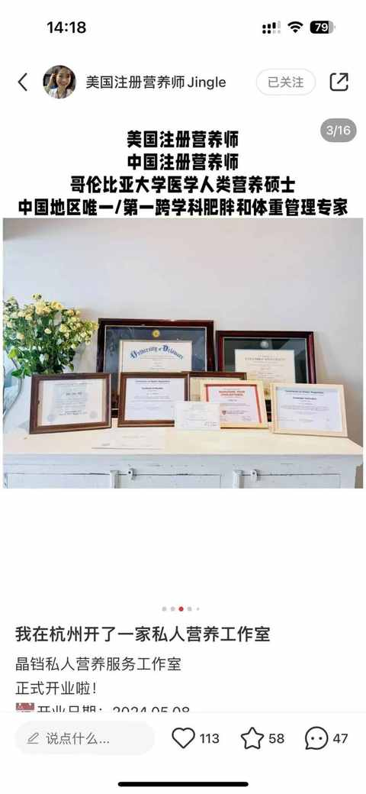
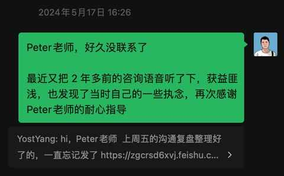
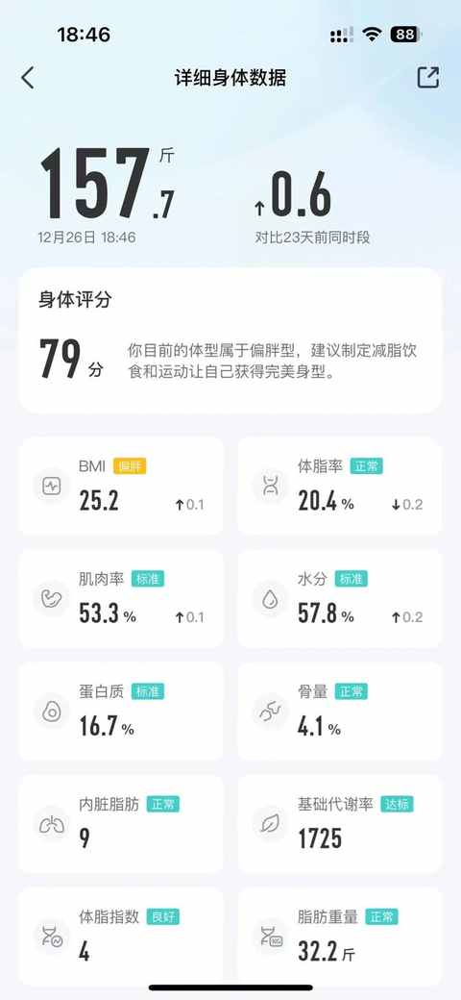
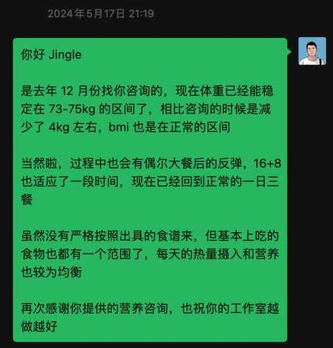

这个5 月，我感谢了两位曾线上咨询的老师
整个 5 月份的感觉都挺奇妙，时不时会有一些想法冒出来，有一天刷微博的时候看到纵横四海主播的一条关于用输出倒逼输入的微博，突然就想按照上面说的方法来试试看，然后就开始每天写 800 字左右，并在公众号发布出来。

另一件突然想去做的事情，是想感谢之前做过付费咨询的老师，一位是专注人力资源领域的专家：Peter老师
另一位是营养师 & 播客主播：Jingle老师
最近也在杭州开了一家私人营养工作室

你可能会好奇，为什么想给两位线上交流过的网友表达感谢，这其中又是发生了什么具体的事情，下面来具体阐述下，希望能对大家有帮助。
一、为什么是这两位老师呢？
认识到两位老师都有一个共同的原因：基于两位都有持续的优质内容发布在多个平台，并被我看到，进而添加了微信，也都分别进行了 1 次付费咨询。
两位老师的内容对于当时的我都特别有价值，解答不少当时的疑惑，Peter老师在即刻 app上会发布不少有价值的内容， Jingle老师在小宇宙 app上会定期更新播客内容，大多都是关于个人营养方面。
二、为什么是当下的时间？
两年多前，咨询Peter老师的时候是有准备一个文档，然后又结合老师的建议，说可以录制音频，所以就选择了飞书用来做语音的工具。
不得不夸夸飞书，在语音的同时，音频会被同步录制，且在飞书妙记里面会有语音识别之后的文字稿，特别方便做二次梳理。
鉴于所有完整的内容都保存在飞书文档中，就在某一个上午重新把之前的文档和录制的音频都重看和重听了，依然是获益匪浅，由内而外的想去和 Peter老师表达下感谢，然后就编辑内容发了过去。

是在去年 12 月底咨询的 Jingle老师，当时恰逢减肥的平台期，体重始终还是在 78kg 左右浮动，距离理想的 75kg 不近不远，但又感觉遥不可及，很是困扰。

偶然间在小宇宙 app 里面看到了Jingle老师的播客，听了几期之后感觉之前有不少错误认知，结合当时的需求和状况，也梳理了一份详细的文档，联系上Jingle老师之后，就在第一时间填写问卷完成了 1 次咨询。
最近每天称重，基本也都是在 73-75kg浮动，BMI 也是在正常值，顺利达成了阶段性目标。

希望接下来表达感谢也能成为我的一个习惯，表达感谢是一件很开心且治愈的事情，相信收到真诚感谢的人也会感受到这种由内而外的能量。